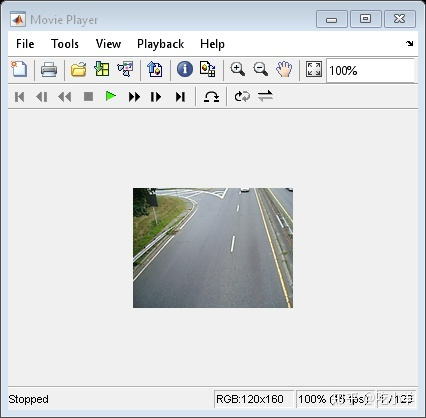
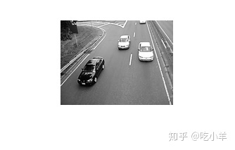
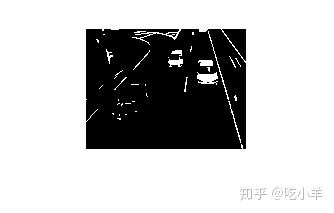

Home
本示例说明如何使用“图像处理工具箱”来可视化和分析视频或图像序列。本示例使用VideoReader（MATLAB），implay和其他图像处理工具箱功能来检测交通视频中的浅色汽车。请注意，VideoReader具有面向特定于平台的功能，在某些平台上可能无法读取提供的Motion JPEG2000视频。
步骤1：使用VideoReader读取视频
VideoReader函数构造一个多媒体读取对象，该对象可以从多媒体文件读取视频数据。请参阅VideoReader以了解您的平台所支持的格式。
使用VideoReader访问视频并获得其基本信息。
trafficVid = VideoReader('traffic.mj2')
trafficVid =
VideoReader with properties:
General Properties:
Name: 'traffic.mj2'
Path: '/mathworks/devel/bat/Bdoc20b/build/matlab/toolbox/images/imdata'
Duration: 8
CurrentTime: 0
NumFrames: 120
Video Properties:
Width: 160
Height: 120
FrameRate: 15
BitsPerPixel: 24
VideoFormat: 'RGB24'
get方法提供有关视频的更多信息，例如以秒为单位的持续时间。
get(trafficVid)
obj =
VideoReader with properties:
General Properties:
Name: 'traffic.mj2'
Path: '/mathworks/devel/bat/Bdoc20b/build/matlab/toolbox/images/imdata'
Duration: 8
CurrentTime: 0
NumFrames: 120
Video Properties:
Width: 160
Height: 120
FrameRate: 15
BitsPerPixel: 24
VideoFormat: 'RGB24'
步骤2：使用IMPLAY浏览视频
在implay中浏览视频。
implay('traffic.mj2');

步骤3：算法开发
在处理视频数据时，可以从视频中选择一个具有代表性的帧并在该帧上开发算法。然后，该算法可以应用于视频中所有帧的处理。
对于此汽车标记应用程序，需要检查包含浅色和深色汽车的帧。当图像（例如在交通视频帧中）具有许多结构时，在尝试检测感兴趣的对象之前尽可能地简化图像会很有用。对汽车标记应用程序执行此操作的一种方法是，抑制图像中不是浅色汽车的所有对象（深色汽车，车道，草地等）。通常，需要采用多种技术组合才能删除这些无关的对象。
从视频帧中删除深色汽车的一种方法是使用该imextendedmax函数。此函数返回一个二进制图像，该图像标识强度值高于指定阈值（称为区域最大值）的区域。图像中像素值低于此阈值的所有其他对象将成为背景（灰度图像中，像素强度值越低，表达的颜色越深）。要消除深色汽车，请确定图像中这些对象的平均像素值。（rgb2gray用于将原始视频从RGB转换为灰度。）您可以使用像素区域工具implay查看像素值。调用imextendedmax时，将平均像素值（或稍高的值）指定为阈值。对于此示例，将该值设置为50。
darkCarValue = 50; darkCar = rgb2gray(read(trafficVid,71)); noDarkCar = imextendedmax(darkCar, darkCarValue); imshow(darkCar) figure, imshow(noDarkCar)


在经过处理的图像中，请注意在移除大多数深色汽车对象的同时，也残留了许多其他无关的对象，尤其是车道标记。区域最大值处理将不会删除车道标记，因为它们的像素值高于阈值。要删除这些对象，可以使用形态函数imopen。此函数使用形态学处理从二进制图像中删除小对象，同时保留大对象。使用形态学处理时，必须确定操作中使用的结构元素的大小和形状。由于车道标记是细长的物体，因此请使用半径等于车道标记宽度的圆盘形结构元素。您可以在implay中使用像素区域工具估算这些物体的宽度。对于此示例，将该值设置为2。
sedisk = strel('disk',2);
noSmallStructures = imopen(noDarkCar, sedisk);
imshow(noSmallStructures)
要完成算法，请使用regionprops在noSmallStructures（应该仅是浅色的汽车）中来查找其中的对象的质心。使用此信息将标签放置在原始视频中的浅色汽车上。
步骤4：将算法应用于视频
汽车标记应用程序每循环一次，处理一帧视频。（由于典型的视频包含大量帧，因此一次读取和处理所有帧会占用大量内存。）
可以一次处理一小段视频（如本例中的视频），并且有许多函数可以提供此功能。
为了更快地处理，请预先分配用于存储处理后的视频的内存。
nframes = trafficVid.NumberOfFrames;
I = read(trafficVid, 1);
taggedCars = zeros([size(I,1) size(I,2) 3 nframes], class(I));
for k = 1 : nframes
singleFrame = read(trafficVid, k);
% Convert to grayscale to do morphological processing.
I = rgb2gray(singleFrame);
% Remove dark cars.
noDarkCars = imextendedmax(I, darkCarValue);
% Remove lane markings and other non-disk shaped structures.
noSmallStructures = imopen(noDarkCars, sedisk);
% Remove small structures.
noSmallStructures = bwareaopen(noSmallStructures, 150);
% Get the area and centroid of each remaining object in the frame. The
% object with the largest area is the light-colored car. Create a copy
% of the original frame and tag the car by changing the centroid pixel
% value to red.
taggedCars(:,:,:,k) = singleFrame;
stats = regionprops(noSmallStructures, {'Centroid','Area'});
if ~isempty([stats.Area])
areaArray = [stats.Area];
[junk,idx] = max(areaArray);
c = stats(idx).Centroid;
c = floor(fliplr(c));
width = 2;
row = c(1)-width:c(1)+width;
col = c(2)-width:c(2)+width;
taggedCars(row,col,1,k) = 255;
taggedCars(row,col,2,k) = 0;
taggedCars(row,col,3,k) = 0;
end
end
步骤5：结果可视化
获取原始视频的帧率，然后将其用于在implay中查看taggedCars。
frameRate = trafficVid.FrameRate; implay(taggedCars,frameRate);
======================================================================
我的测试结果及程序
下面是我测试的代码：

注：本文根据MATLAB官网内容修改而成。